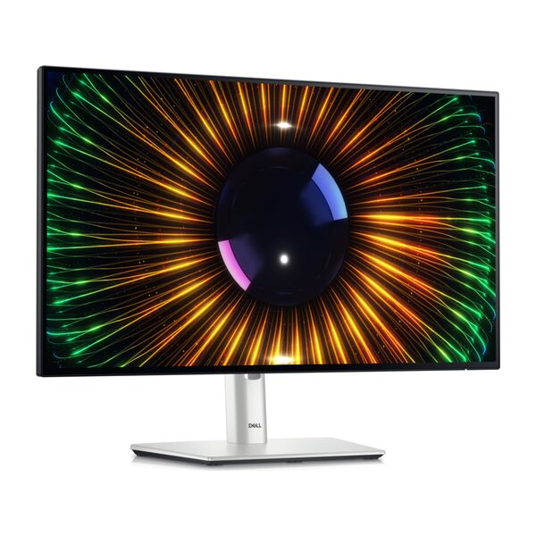
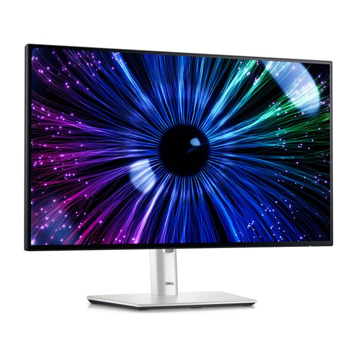
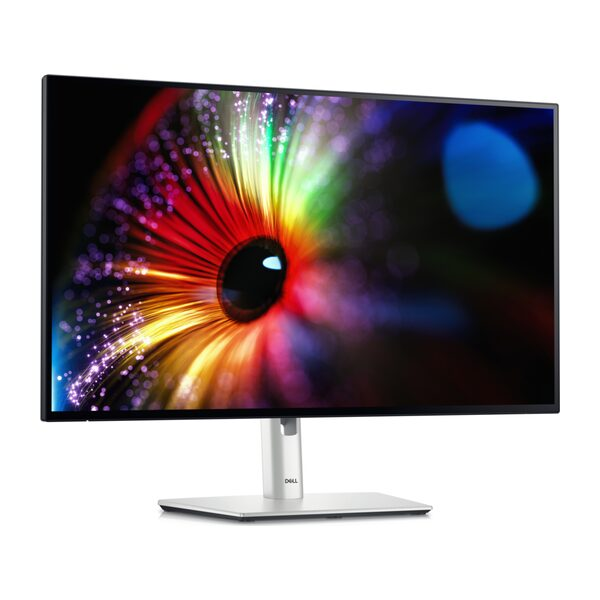
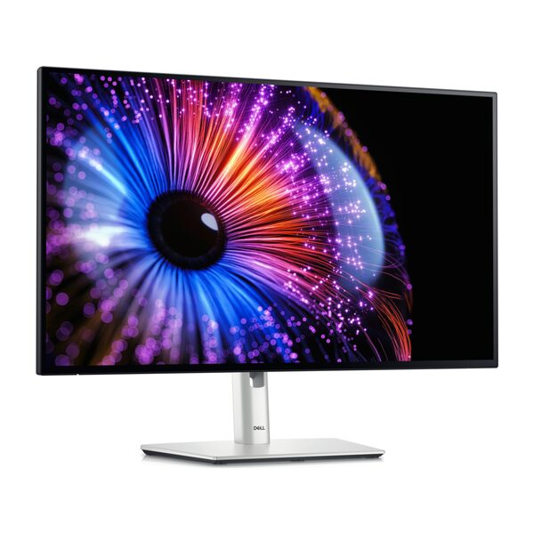
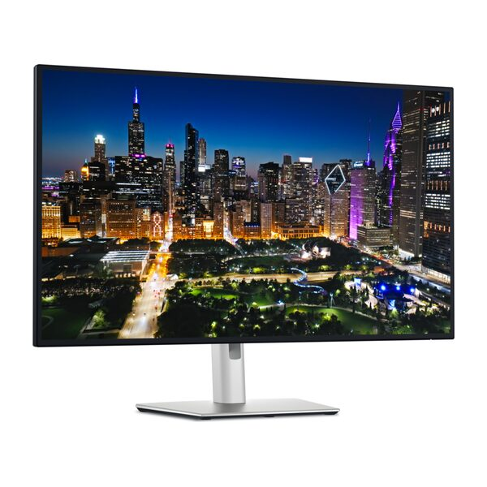
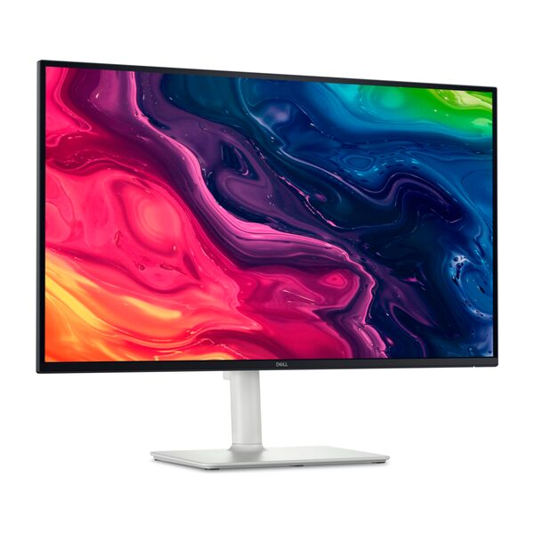
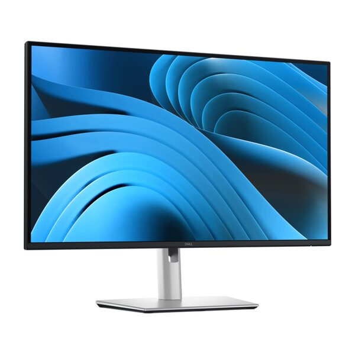
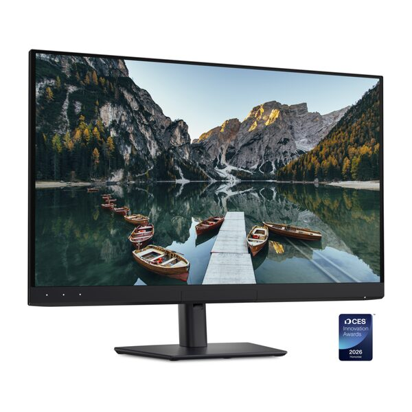

-
 5Đã bán 651
So sánh
5Đã bán 651
So sánh
-
 5Đã bán 556
So sánh
5Đã bán 556
So sánh
-
 5Đã bán 15
So sánh
5Đã bán 15
So sánh
-
 5Đã bán 8
So sánh
5Đã bán 8
So sánh
-

Dell UltraSharp U2424H Hàng sắp vềĐăng ký nhậnNhận thông tin -

Dell UltraSharp U2424HE Hàng sắp vềĐăng ký nhậnNhận thông tin -

Dell UltraSharp U2724D Hàng sắp vềĐăng ký nhậnNhận thông tin -

Dell UltraSharp U2724DE Hàng sắp vềĐăng ký nhậnNhận thông tin -

Dell UltraSharp U3225QE Hàng sắp vềĐăng ký nhậnNhận thông tin -

Dell 27 Plus 4K S2725QS Hàng sắp vềĐăng ký nhậnNhận thông tin -

Dell Pro 27 Plus P2725D Hàng sắp vềĐăng ký nhậnNhận thông tin -

Dell UltraSharp U3226Q Hàng sắp vềĐăng ký nhậnNhận thông tin
Thông tin hãng
Màn hình Dell là một trong những lựa chọn được nhiều người tìm mua khi cần một màn hình máy tính hiển thị ổn định và bền theo thời gian. Thương hiệu này có cả những sản phẩm phổ thông cho công việc văn phòng lẫn dòng màn hình 4K chuyên dùng cho thiết kế, nên người mua có thể tìm được sản phẩm phù hợp với ngân sách và nhu cầu sử dụng khác nhau. Nội dung dưới đây giúp bạn hiểu rõ đặc điểm nổi bật của màn hình Dell, các dòng đang có tại Thế Giới Di Động và cách chọn sản phẩm phù hợp nhất với công việc hằng ngày.
Dell trong lĩnh vực màn hình máy tính
Dell là thương hiệu công nghệ đến từ Mỹ, được nhiều người biết đến qua các dòng laptop và máy tính để bàn, nhưng mảng màn hình máy tính của hãng cũng có vị trí riêng nhờ chất lượng hiển thị ổn định và độ bền cao. Các sản phẩm màn hình Dell thường được đánh giá cao ở khả năng giữ màu chuẩn trong thời gian dài sử dụng, phù hợp với môi trường làm việc cần độ chính xác về hình ảnh như văn phòng, phòng thiết kế hoặc phòng học. Bên cạnh đó, Dell cũng đầu tư vào các công nghệ bảo vệ mắt và thiết kế thân thiện với người dùng văn phòng, giúp màn hình của hãng phù hợp với nhiều đối tượng từ nhân viên văn phòng, sinh viên đến người làm sáng tạo nội dung.

Màn hình Dell mang thiết kế hiện đại và độ bền cao, phù hợp làm trung tâm cho không gian làm việc từ văn phòng đến sáng tạo nội dung.
Màn hình Dell có gì nổi bật?
Trước khi chọn mua, bạn nên nắm rõ những điểm mạnh thường thấy ở màn hình Dell để biết sản phẩm này có thực sự phù hợp với nhu cầu sử dụng của mình hay không. Dưới đây là những đặc điểm nổi bật nhất, được thể hiện rõ trên các sản phẩm đang bán hiện nay.
Tấm nền IPS cho góc nhìn rộng và màu sắc ổn định
Phần lớn màn hình Dell dùng tấm nền IPS với góc nhìn lên đến 178 độ theo cả chiều ngang và chiều dọc, giúp màu sắc và độ tương phản gần như không đổi dù bạn nhìn màn hình từ vị trí lệch sang hai bên. Nhờ vậy, khi làm việc nhóm hoặc mở nhiều cửa sổ cùng lúc, người ngồi cạnh vẫn nhìn thấy hình ảnh rõ ràng như người ngồi chính diện. Độ phủ màu phổ biến ở mức 99% sRGB đã đủ để hiển thị màu sắc trung thực cho công việc văn phòng, học tập và chỉnh sửa nội dung cơ bản, còn với các sản phẩm cao cấp hơn, độ phủ màu và độ chính xác màu còn được nâng lên mức chuyên nghiệp hơn để phục vụ công việc thiết kế.

Tấm nền IPS trên màn hình Dell giữ màu sắc chính xác dù nhìn từ góc lệch, phù hợp khi nhiều người cùng xem chung một màn hình.
Tần số quét cao giúp thao tác mượt mà hơn
Nhiều màn hình Dell hiện nay đã nâng tần số quét lên 100Hz hoặc 120Hz thay vì mức 60Hz tiêu chuẩn trước đây, cùng thời gian phản hồi 5ms giúp hình ảnh chuyển động mượt hơn khi cuộn trang, kéo thả cửa sổ hoặc xem video. Với người dùng văn phòng, sự khác biệt này thể hiện rõ nhất khi làm việc với bảng tính lớn hoặc di chuyển liên tục giữa nhiều ứng dụng, vì con trỏ chuột và thao tác kéo thả sẽ đỡ giật hơn so với màn hình tần số quét thấp. Tần số quét cao ở đây chủ yếu phục vụ trải nghiệm mượt mà hằng ngày, không nhắm đến chơi game tốc độ cao vốn cần các dòng màn hình chuyên game với tần số quét vượt trội hơn nhiều.

Tần số quét 100-120Hz trên màn hình Dell giúp các thao tác cuộn trang, kéo thả cửa sổ và xem video diễn ra mượt hơn so với màn hình 60Hz tiêu chuẩn.
Công nghệ bảo vệ mắt cho thời gian sử dụng dài
Các sản phẩm màn hình Dell thường tích hợp công nghệ chống nháy Flicker-free cùng chế độ giảm ánh sáng xanh như ComfortView Plus hoặc Eye Comfort, giúp giảm cảm giác mỏi mắt khi ngồi máy tính liên tục nhiều giờ. Đây là điểm cộng đáng chú ý với người làm văn phòng hoặc học sinh, sinh viên phải nhìn màn hình suốt cả ngày dài. Một số sản phẩm còn có thêm lớp chống chói Anti-Glare, giúp hạn chế phản chiếu ánh sáng khi đặt màn hình gần cửa sổ hoặc dưới đèn trần, nhưng hiệu quả chống chói vẫn phụ thuộc vào vị trí đặt máy và nguồn sáng trong phòng.

Công nghệ chống nháy Flicker-free và giảm ánh sáng xanh trên màn hình Dell giúp giảm mỏi mắt khi ngồi máy tính liên tục nhiều giờ.
Thiết kế linh hoạt và cổng kết nối đa dạng
Chân đế của màn hình Dell thường hỗ trợ nâng hạ độ cao, nghiêng, xoay ngang và nhiều sản phẩm còn xoay dọc được 90 độ, giúp người dùng điều chỉnh theo tư thế ngồi phù hợp mà không cần mua thêm giá treo. Về cổng kết nối, ngoài HDMI và DisplayPort quen thuộc, một số sản phẩm còn có cổng USB-C hỗ trợ cấp nguồn, thậm chí là Thunderbolt 4 trên dòng cao cấp, cho phép vừa truyền hình ảnh vừa sạc laptop chỉ bằng một sợi dây duy nhất. Nhờ đó bàn làm việc gọn gàng hơn hẳn so với việc phải cắm nhiều dây sạc và dây tín hiệu riêng lẻ.

Cổng kết nối như USB-C hoặc Thunderbolt trên màn hình Dell cho phép vừa truyền hình ảnh vừa sạc laptop chỉ với một sợi dây duy nhất.
Có nên chọn màn hình Dell không?
Màn hình Dell phù hợp với nhân viên văn phòng, sinh viên và người mới bắt đầu công việc cần máy tính bàn ổn định, nhờ mức giá dễ tiếp cận và độ bền được đánh giá cao qua nhiều năm sử dụng. Người làm thiết kế đồ họa, chỉnh sửa ảnh hoặc dựng video cũng có thể tìm thấy sản phẩm phù hợp ở dòng màn hình độ phân giải cao với màu sắc chính xác hơn. Tuy nhiên, nếu bạn đang tìm một màn hình chuyên chơi game với tần số quét cực cao hoặc công nghệ đồng bộ hình ảnh chuyên biệt, các sản phẩm màn hình Dell hiện tại thiên về công việc và giải trí thông thường hơn là chơi game tốc độ cao, nên bạn cần cân nhắc thêm nhu cầu thực tế trước khi quyết định.

Màn hình Dell phù hợp với nhân viên văn phòng, sinh viên và người làm thiết kế nhờ độ bền cao và mức giá dễ tiếp cận.
Các dòng màn hình Dell hiện có tại Thế Giới Di Động
Để dễ hình dung sự khác nhau giữa các sản phẩm màn hình Dell đang bán, bạn có thể tham khảo bảng dưới đây:
| Tên sản phẩm | Kích thước & Độ phân giải | Tấm nền & Tần số quét | Đặc điểm nổi bật | Giá bán |
|---|---|---|---|---|
| Dell 23.8 inch Full HD P2425H | 23.8 inch, Full HD | IPS, 100Hz | Chân đế xoay pivot 90 độ, cổng USB-C cấp nguồn 15W | 4.690.000₫ |
| Dell 27 inch Full HD P2725H | 27 inch, Full HD | IPS, 100Hz | Màn hình lớn hơn cho không gian làm việc rộng, chống nháy Flicker-free, ComfortView Plus | 5.590.000₫ |
| Dell Pro 23.8 inch Full HD P2426H | 23.8 inch, Full HD | IPS, 120Hz | Tần số quét cao hơn, Low Blue Light, chống chói Anti-Glare | 4.890.000₫ |
| Dell Pro 27 inch Full HD P2726H | 27 inch, Full HD | IPS, 120Hz | Màn hình lớn, Eye Comfort, Low Blue Light, chống chói Anti-Glare | 5.790.000₫ |
| Dell UltraSharp 27 inch 4K U2725QE | 27 inch, 4K UHD | IPS, 120Hz | Thunderbolt 4 cấp nguồn 140W, độ chính xác màu Delta E < 1.5, DisplayHDR 600 | 15.990.000₫ |
Nhìn chung, các sản phẩm màn hình Dell hiện có chia thành ba nhóm rõ rệt theo nhu cầu sử dụng, và bạn có thể chọn dựa trên công việc hằng ngày của mình.
Dòng Dell tiêu chuẩn Full HD 100Hz
Nhóm này gồm Dell P2425H và Dell P2725H, khác nhau chủ yếu ở kích thước màn hình 23.8 inch hoặc 27 inch, còn lại đều dùng chung tấm nền IPS Full HD với tần số quét 100Hz. Đây là lựa chọn hợp lý cho công việc văn phòng, học tập và các tác vụ hằng ngày không đòi hỏi cấu hình đồ họa cao, nhờ mức giá dễ tiếp cận và độ bền ổn định.

Dòng Dell tiêu chuẩn gồm hai kích thước 23.8 inch và 27 inch, dùng chung tấm nền IPS Full HD và tần số quét 100Hz cho công việc văn phòng.
Dòng Dell Pro Full HD 120Hz
Dell Pro P2426H và Dell Pro P2726H là hai sản phẩm mới hơn, vẫn giữ độ phân giải Full HD nhưng nâng tần số quét lên 120Hz và bổ sung thêm công nghệ bảo vệ mắt như Eye Comfort cùng lớp chống chói Anti-Glare. Nhóm này phù hợp với người muốn trải nghiệm mượt mà hơn khi làm việc đa nhiệm hoặc giải trí nhẹ, mà vẫn giữ được mức giá gần với dòng tiêu chuẩn.

Dòng Dell Pro nâng tần số quét lên 120Hz và bổ sung công nghệ bảo vệ mắt, phù hợp cho người muốn trải nghiệm mượt mà hơn khi làm việc đa nhiệm.
Dòng Dell UltraSharp 4K chuyên nghiệp
Dell UltraSharp U2725QE là sản phẩm cao cấp nhất trong danh mục, với độ phân giải 4K UHD, độ chính xác màu Delta E nhỏ hơn 1.5 và cổng Thunderbolt 4 hỗ trợ cấp nguồn lên đến 140W cho laptop. Đây là lựa chọn dành cho người làm thiết kế đồ họa, dựng phim hoặc chỉnh sửa ảnh chuyên nghiệp, những công việc cần độ chi tiết cao và màu sắc chuẩn xác.

Độ phân giải 4K UHD và độ chính xác màu cao trên Dell UltraSharp phù hợp với công việc thiết kế đồ họa và chỉnh sửa ảnh chuyên nghiệp.
Chọn màn hình Dell theo nhu cầu
Sau khi đã biết các dòng sản phẩm đang có, bạn có thể đối chiếu với công việc thực tế của mình để chọn đúng sản phẩm, tránh mua thừa tính năng hoặc thiếu hiệu năng cần thiết.
Màn hình Dell cho văn phòng và học tập
Nếu công việc của bạn chủ yếu là soạn thảo văn bản, làm bảng tính, học trực tuyến hoặc duyệt web, dòng Dell tiêu chuẩn Full HD 100Hz như P2425H hoặc P2725H đã đáp ứng tốt nhu cầu này. Màn hình vẫn đảm bảo hiển thị chữ rõ nét, màu sắc ổn định và có công nghệ chống nháy giúp mắt đỡ mỏi khi ngồi làm việc nhiều giờ liên tục.

Màn hình Dell Full HD đáp ứng tốt nhu cầu soạn thảo văn bản, học trực tuyến và làm việc văn phòng hằng ngày.
Màn hình Dell cho đa nhiệm và giải trí mượt mà
Với người thường xuyên mở nhiều cửa sổ, làm việc với bảng tính lớn hoặc xem phim, lướt video giải trí sau giờ làm, dòng Dell Pro 120Hz như P2426H hoặc P2726H mang lại trải nghiệm cuộn trang và chuyển cảnh mượt hơn so với màn hình 100Hz thông thường, kèm thêm công nghệ bảo vệ mắt tốt hơn để dùng trong thời gian dài.

Tần số quét 120Hz trên Dell Pro giúp việc mở nhiều cửa sổ cùng lúc hoặc xem video giải trí diễn ra mượt mà hơn.
Màn hình Dell cho thiết kế đồ họa và sáng tạo nội dung
Người làm thiết kế, chỉnh sửa ảnh hoặc dựng video nên chọn Dell UltraSharp U2725QE nhờ độ phân giải 4K, độ chính xác màu cao và cổng Thunderbolt 4 tiện lợi khi kết nối với laptop. Độ phân giải cao giúp nhìn rõ từng chi tiết nhỏ khi phóng to hình ảnh, còn màu sắc chuẩn xác giúp thành phẩm hiển thị đúng như khi xuất ra máy in hoặc màn hình khác.

Độ chính xác màu cao trên Dell UltraSharp giúp người làm thiết kế và chỉnh sửa ảnh nhìn thấy màu sắc đúng như khi xuất bản.
Những sai lầm thường gặp khi chọn mua màn hình Dell
Nhiều người chọn màn hình chỉ dựa vào kích thước mà bỏ qua các yếu tố khác, dẫn đến mua sản phẩm không phù hợp với công việc thực tế. Dưới đây là những sai lầm thường gặp bạn nên tránh.

Chọn đúng kích thước và tấm nền màn hình Dell phù hợp nhu cầu giúp tránh lãng phí ngân sách hoặc thiếu hiệu năng cần thiết.
- Chỉ quan tâm kích thước, bỏ qua tấm nền và tần số quét: Màn hình lớn nhưng tần số quét thấp vẫn có thể gây mỏi mắt khi làm việc lâu. Nên kiểm tra loại tấm nền và tần số quét trước khi so sánh kích thước.
- Mua màn hình 4K nhưng máy tính không đủ mạnh để hiển thị mượt: Độ phân giải cao đòi hỏi card đồ họa và cổng kết nối tương ứng, nếu không hình ảnh có thể giật hoặc không đạt đúng tần số quét tối đa. Nên kiểm tra cấu hình máy tính hoặc laptop đang dùng trước khi chọn màn hình 4K.
- Nhầm lẫn cổng kết nối cấp nguồn với cổng chỉ truyền hình ảnh: Không phải cổng USB-C nào trên màn hình cũng hỗ trợ sạc laptop, công suất cấp nguồn cũng khác nhau giữa các sản phẩm. Nên đối chiếu thông số cổng kết nối trước khi kỳ vọng màn hình sạc được thiết bị của mình.
- Bỏ qua khả năng điều chỉnh chân đế: Chân đế không xoay hoặc không nâng hạ được sẽ khó tìm tư thế ngồi thoải mái lâu dài. Nên ưu tiên sản phẩm có chân đế xoay pivot và nâng hạ nếu bạn ngồi máy tính nhiều giờ mỗi ngày.
Kiểm tra kỹ các yếu tố trên trước khi quyết định giúp bạn chọn đúng sản phẩm phù hợp với công việc, thay vì chỉ nhìn vào giá hoặc kích thước màn hình.
Vì sao nên mua màn hình Dell tại Thế Giới Di Động?
Mua màn hình Dell tại Thế Giới Di Động giúp bạn yên tâm về nguồn gốc sản phẩm và được hỗ trợ đầy đủ trong suốt quá trình sử dụng. Dưới đây là những quyền lợi bạn có thể nhận được.
- Trả góp 0%: Nhiều sản phẩm màn hình Dell hỗ trợ trả góp 0% lãi suất qua các đối tác tài chính, giúp bạn dễ dàng có được sản phẩm phù hợp mà không phải thanh toán toàn bộ một lần. Điều kiện áp dụng có thể khác nhau tùy sản phẩm và đối tác trả góp.
- Thanh toán linh hoạt: Bạn có thể chọn thanh toán tiền mặt, quẹt thẻ, thanh toán online hoặc mua trả chậm tùy theo khả năng tài chính của mình.
- Bảo hành chính hãng 3 năm: Các sản phẩm màn hình Dell đang bán tại đây được bảo hành chính hãng 3 năm tại các trung tâm bảo hành của hãng, giúp bạn an tâm sử dụng lâu dài.
- Hỗ trợ đổi 1 đổi 1 trong 12 tháng: Nếu sản phẩm gặp lỗi từ nhà sản xuất, bạn được đổi máy mới trong vòng 12 tháng đầu tại hệ thống cửa hàng, kèm chính sách miễn phí tháng đầu tiên.
- Giao hàng nhanh toàn quốc: Sản phẩm được giao đến tận nơi ở hầu hết các tỉnh thành, giúp bạn nhận máy nhanh chóng để lắp đặt và sử dụng ngay.
- Gần 3.000 cửa hàng trên toàn quốc: Bạn có thể ghé cửa hàng gần nhất để xem trực tiếp sản phẩm, được tư vấn kỹ trước khi mua và nhận hỗ trợ sau bán hàng thuận tiện hơn.
Với các quyền lợi trên, bạn có thể chọn sản phẩm màn hình Dell phù hợp với nhu cầu của mình và đặt mua ngay tại Thế Giới Di Động.
Câu hỏi thường gặp
Màn hình Dell có tần số quét cao có phải màn hình gaming không?
Không hẳn. Các sản phẩm màn hình Dell hiện tại có tần số quét 100Hz hoặc 120Hz giúp thao tác hằng ngày mượt hơn, nhưng không được thiết kế chuyên cho chơi game tốc độ cao như các dòng màn hình gaming chuyên biệt có tần số quét và công nghệ đồng bộ hình ảnh riêng.
Màn hình Dell có xoay dọc được không?
Có, phần lớn sản phẩm màn hình Dell đang bán đều có chân đế hỗ trợ xoay pivot 90 độ, kèm khả năng nâng hạ và nghiêng, giúp bạn dễ dàng chuyển sang chế độ màn hình dọc khi cần đọc tài liệu dài.
Nên chọn màn Dell 23.8 inch hay 27 inch?
Nếu bàn làm việc nhỏ hoặc bạn ngồi gần màn hình, 23.8 inch vẫn đủ rõ và tiết kiệm không gian hơn. Nếu bạn cần không gian làm việc rộng để mở nhiều cửa sổ cùng lúc hoặc ngồi xa màn hình hơn, 27 inch sẽ thoải mái hơn cho mắt.
Màn hình Dell UltraSharp có phù hợp cho người mới làm thiết kế không?
Có, U2725QE phù hợp cả với người mới bắt đầu công việc thiết kế nhờ độ phân giải 4K và màu sắc chính xác, miễn là máy tính hoặc laptop đang dùng đủ mạnh để xử lý độ phân giải cao mượt mà.
Cổng USB-C trên màn hình Dell có sạc được laptop không?
Tùy sản phẩm. Một số màn hình Dell tiêu chuẩn có cổng USB-C cấp nguồn ở mức công suất thấp hơn, chỉ đủ cho thiết bị phụ, trong khi màn hình UltraSharp cao cấp có cổng Thunderbolt 4 cấp nguồn công suất cao hơn, đủ để sạc nhiều laptop tương thích.
Mua màn hình Dell tại Thế Giới Di Động có được bảo hành chính hãng không?
Có, các sản phẩm màn hình Dell tại đây đều được bảo hành chính hãng 3 năm tại trung tâm bảo hành của hãng, kèm chính sách đổi 1 đổi 1 trong 12 tháng đầu nếu sản phẩm gặp lỗi từ nhà sản xuất.